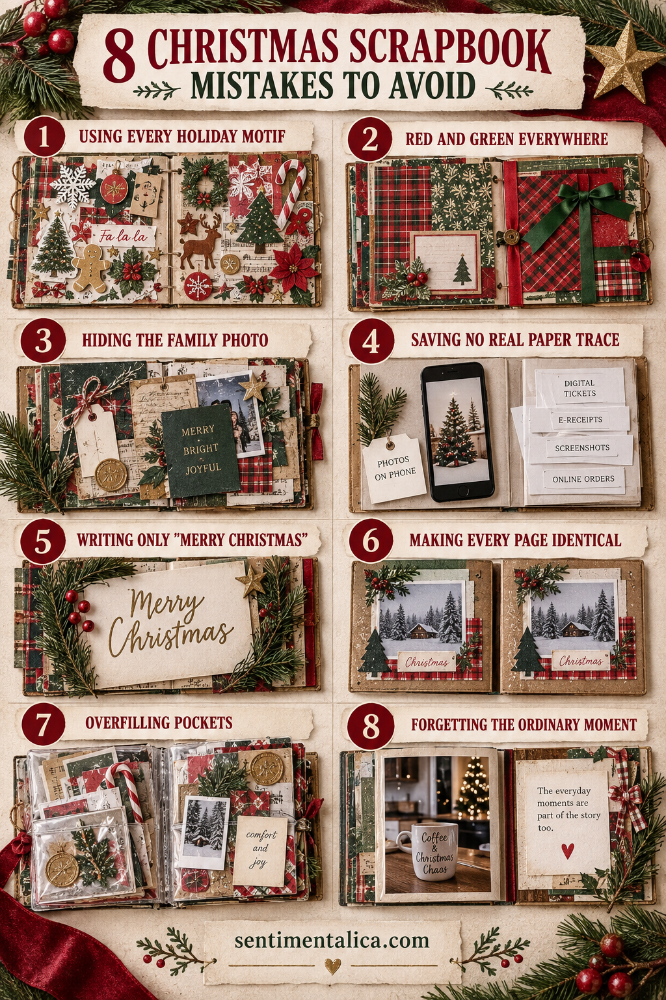

Christmas scrapbook pages become hard to read when every photograph, pattern, and ornament asks for equal attention. These practical corrections keep the people and the story at the center.

1. Avoid using every holiday motif
The problem is not the material itself; it is allowing it to take the same visual importance as the story. A reliable correction is to limit the palette to one neutral, one anchor, and one accent. Make the change before gluing and check the page from arm’s length.
If the photograph and writing become clearer, the edit worked. You do not need to fill the space you just recovered.
2. Avoid using red and green at equal strength everywhere
The problem is not the material itself; it is allowing it to take the same visual importance as the story. A reliable correction is to protect the important photograph or sentence first. Make the change before gluing and check the page from arm’s length.
If the photograph and writing become clearer, the edit worked. You do not need to fill the space you just recovered.
3. Avoid hiding the family photograph
The problem is not the material itself; it is allowing it to take the same visual importance as the story. A reliable correction is to repeat one shape and vary its scale. Make the change before gluing and check the page from arm’s length.
If the photograph and writing become clearer, the edit worked. You do not need to fill the space you just recovered.
4. Avoid saving no real paper trace
The problem is not the material itself; it is allowing it to take the same visual importance as the story. A reliable correction is to leave a margin or quiet block for the eye. Make the change before gluing and check the page from arm’s length.
If the photograph and writing become clearer, the edit worked. You do not need to fill the space you just recovered.
5. Avoid writing only Merry Christmas
The problem is not the material itself; it is allowing it to take the same visual importance as the story. A reliable correction is to use flat, dry, archival-safe paper whenever possible. Make the change before gluing and check the page from arm’s length.
If the photograph and writing become clearer, the edit worked. You do not need to fill the space you just recovered.
6. Avoid making every page identical
The problem is not the material itself; it is allowing it to take the same visual importance as the story. A reliable correction is to replace a general phrase with a date, place, sound, or exact remark. Make the change before gluing and check the page from arm’s length.
If the photograph and writing become clearer, the edit worked. You do not need to fill the space you just recovered.
7. Avoid overfilling pockets
The problem is not the material itself; it is allowing it to take the same visual importance as the story. A reliable correction is to photograph the layout, then remove the least useful piece. Make the change before gluing and check the page from arm’s length.
If the photograph and writing become clearer, the edit worked. You do not need to fill the space you just recovered.
8. Avoid forgetting the ordinary moment
The problem is not the material itself; it is allowing it to take the same visual importance as the story. A reliable correction is to vary the structure so each memory keeps its own shape. Make the change before gluing and check the page from arm’s length.
If the photograph and writing become clearer, the edit worked. You do not need to fill the space you just recovered.
Want a low-pressure page to practise with? Open the 100 free floral pictures, choose one image that matches your palette, and try the method before using a favorite original.
Use the distance test
Place the page on a table and step back. You should notice the main memory first, the supporting paper second, and the small seasonal detail third. If decoration wins, reduce contrast or remove one layer.
Simple pages are not unfinished pages. They are pages where the viewer can tell what mattered.